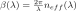
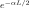
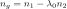
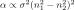
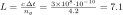
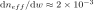
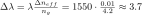

,
,  ; loss of 1–3 dB/cm comes mainly from sidewall roughness (scattering
; loss of 1–3 dB/cm comes mainly from sidewall roughness (scattering  ); the huge index contrast allows bends of a few µm; compact model
); the huge index contrast allows bends of a few µm; compact model Model
| type | geometry | features |
|---|---|---|
| strip | 500 × 220 nm, full etch | tight bends (2–5 µm), higher loss |
| rib | 500 × 220, 90 nm slab | lower loss, electrical contact (doping) |
| slot | two rails, 100 nm gap | field in the gap: sensing, nonlinear |
| SiN | 1 µm × 400 nm | low loss, low contrast, visible light |
Compact model:

, loss (field amplitude
(field amplitude 
for power loss) (Soref and Lorenzo 1986). 
.Loss mechanisms
Sidewall roughness (σ ≈ 1–3 nm): scattering

/width-dependent field at the wall — wider waveguides and rib geometry reduce it. Bending loss falls exponentially with radius. Two-photon absorption and free-carrier absorption at high power. Substrate leakage if the BOX is too thin.Worked example
Delay line for 100 ps:

mm, loss at 2 dB/cm ≈ 1.4 dB. Width sensitivity:
nm : a 5 nm width error shifts a ring resonance by
: a 5 nm width error shifts a ring resonance by 
nm — why thermal tuning is needed.Engineering applications
Every PIC component; spiral delay lines; low-loss SiN for LiDAR and biophotonics; slot guides for sensing and hybrid electro-optic polymers.
Pitfall
 , not
, not  , sets delays and FSRs; sets phase and resonance positions. Confusing them is the most common error in PIC design exercises.
, sets delays and FSRs; sets phase and resonance positions. Confusing them is the most common error in PIC design exercises.